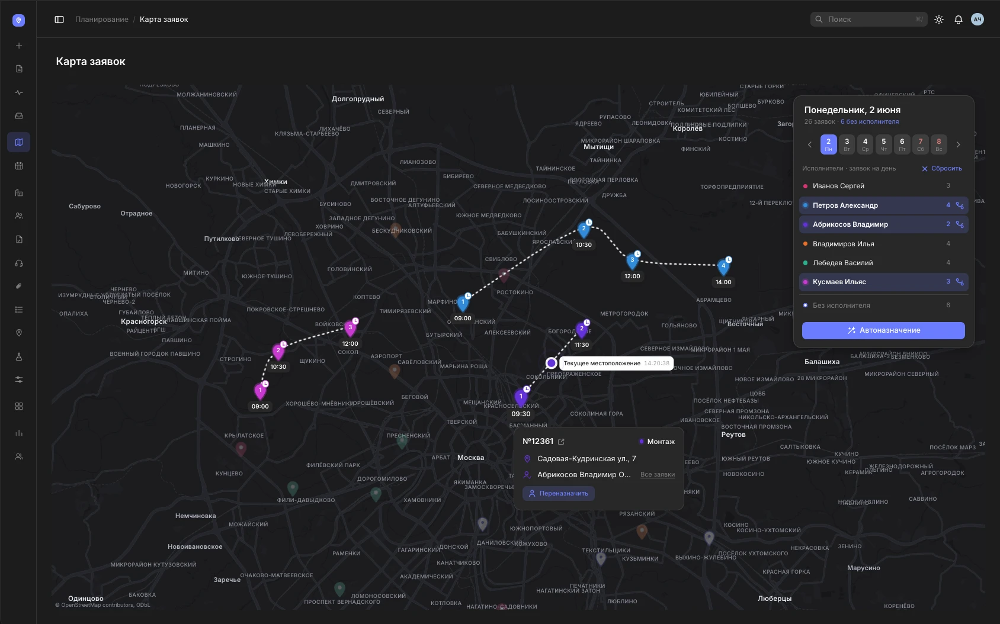
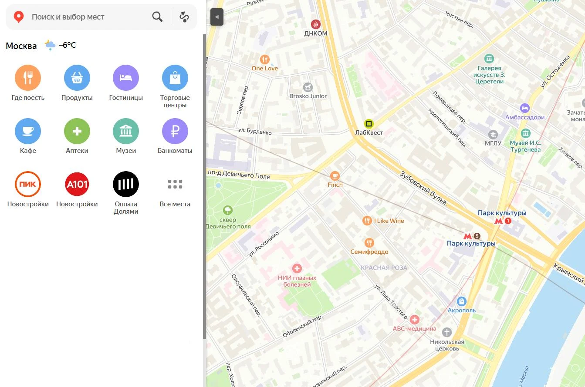
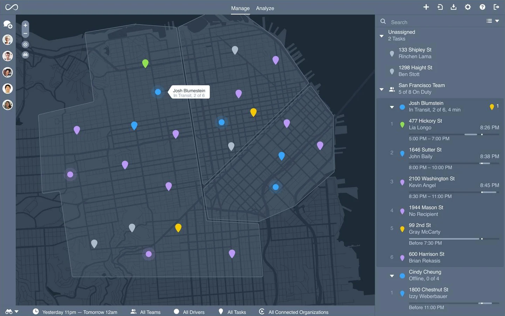
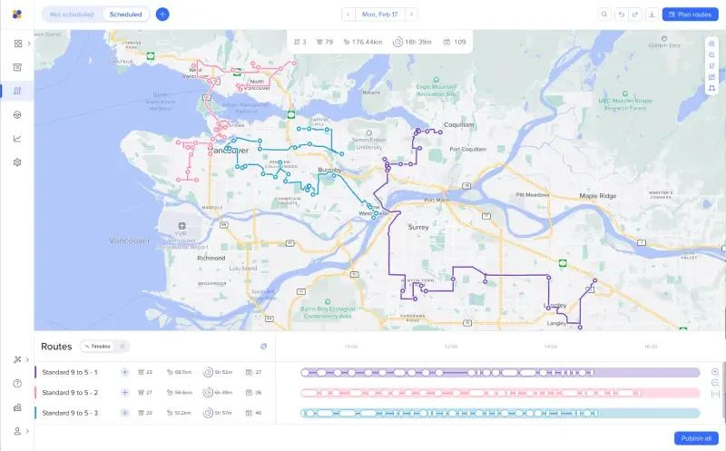
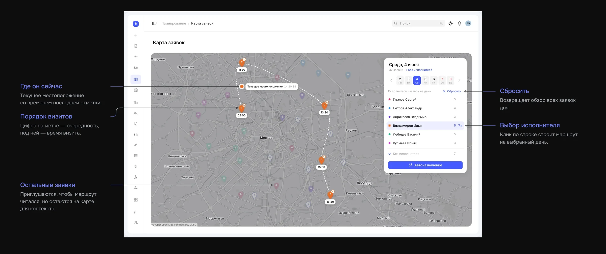

Планирование выездов на карте
Попробовать прототип ↗
Данные компании после года работы системы, по системе целиком. Моя часть — интерфейс и правила, по которым диспетчер планирует день.
Платформа для заявок, выездных инженеров и обслуживания объектов. Web для офиса и мобильный интерфейс в поле
Единственный дизайнер, работала с бизнес-заказчиком, аналитиком и командой разработки
Внедрено, есть данные за год работы

Раньше картину дня менеджер собирал сам. Заявки в CRM, смены в 1С, выезды по звонкам и таблицам. Теперь всё на одной карте.
Инженеры каждый день выезжают к клиентам, и кто-то должен решить, кто куда едет и в какое время. Компания монтирует и обслуживает оборудование у клиентов: в офисах, квартирах, отделениях банков, кафе и на складах.
Боли пользователей
Три роли, три инструмента и одна общая проблема: сложно быстро и согласованно планировать выезды.
Распределяет заявки и согласует доступность инженеров.
Приходится сверять данные из нескольких систем.
Выполняет выезды по назначенным заявкам.
Не видно полного плана на день, и иногда узнаю о задачах в последний момент.
Контролирует загрузку команды и выполнение работ.
Нет единой картины: кто занят, где находится и какие заявки в работе.
В чём суть проблемы
Из-за этого:
Как я решала задачу
- 01
Разобралась в процессе
Выяснила, как назначают инженеров, проверяют загрузку и передают информацию о выездах.
- 02
Построила схему по ролям
Отобразила действия участников и переходы заявки между этапами.
- 03
Нашла главное условие
Назначение зависит сразу от трёх вещей: заявки, графика инженера и его маршрута.
- 04
Подобрала решение
Разобрала аналогичные сервисы и выбрала решение под ограничения Яндекс Карт и бюджет разработки.
- 05
Спроектировала и проверила
Собрала макеты и интерактивный прототип, проверила их с заказчиком и доработала по итогам.
Чтобы назначить инженера, недостаточно видеть заявку. Нужно одновременно учитывать его рабочий график и уже запланированные выезды.
Как выбирала решение для карты
Изучила Яндекс Карты и уточнила масштаб: на карте одновременно 5‑7 инженеров. Поэтому исполнителей различает цвет, без подписей на метках, подложка нейтральная, а заявки открываются прямо из меток.

Яндекс Карты
Стандартные взаимодействия и возможности стилизации.

Onfleet
Исполнители, маршруты и заявки на одном экране.

Routific
Маршруты строятся автоматически, их можно проверить и поправить.
Решение
Обзор дня
Все заявки дня на одной карте: кто куда едет и что ещё никому не отдано.
![Обзор дня: Выбор дня — Неделя одной лентой, выходные красным. Карта и список сразу переключаются на выбранный день.; Исполнители — Цветная точка связывает человека с его метками. Справа — сколько у него заявок на день.; Без исполнителя — Счётчик заявок, которые ещё никому не назначены.; Карточка заявки — Открывается по клику на метку. Кнопка зависит от статуса: «Запланировать исполнителя», «Переназначить» или «Перенести визит».; Метки на карте — Цвет метки — цвет исполнителя. Белая с подсветкой — заявка без исполнителя.](img/explain/map-1-dark.webp)
Маршрут исполнителя
Клик по человеку в списке показывает его день целиком.

Оформление визита
Человек, день и время назначаются в одном окне, не уходя с карты.

Автоназначение
Система предлагает распределение заявок. Оператор оценивает маршруты, при необходимости перестраивает их и подтверждает подходящий вариант. Только после подтверждения назначения фиксируются.
![Автоназначение: Итог в шапке — Сколько было без исполнителя и сколько останется. Что не влезло в дневной лимит, остаётся свободным.; Предложение системы — Метка с пунктирным кольцом — заявка, которую система отдаёт этому исполнителю.; Стратегия — «Ближе к маршруту» — меньше переездов. «Ровнее по загрузке» — нагрузка поровну.; Было → станет — Прирост по каждому исполнителю. Тумблер исключает человека из подбора.; Перестроить или назначить — Новый вариант по той же стратегии или применить предложение.](img/explain/map-4-dark.webp)
Что изменили после проверки
После проверки заказчик попросил показывать запланированное время приезда инженера. Я добавила его в подсказку при наведении на метку, чтобы не приходилось открывать каждую заявку.
Результат через год
После года работы системы компании понадобилось меньше людей и меньше пробега